전기철도기사 (2016-08-21 기출문제)
1과목: 전기철도공학
1. 가공 전차선로의 급전선의 이도는 약 몇 mm인가? (단, 급전선의 장력은 800kgf, 급전선의 단위중량은 1.5kg/m, 지지물의 경간은 50m)
- 508
- 586
- 635
- 685
(정답률: 91%)

2. 전차선 (110mm2)의 접촉점을 흐르는 아크전류가 3000A라면 단선되는 지속시간(sec)은?
- 0.5
- 0.13
- 0.2
- 0.25
(정답률: 91%)
3. 교류 변전설비 중 주변압기(스코트결선)의 순시최대전력은 정격치에 대한 백분율(%)을 한쪽 상에 대하여 몇 [%]에서 2분간으로 하는가?
- 100
- 200
- 300
- 500
(정답률: 60%)
4. 가공전차선로의 자동장력조정장치 종류에 해당하지 않는 것은?
- 활차식
- 조정스트랩식
- 도르래식
- 스프링식
(정답률: 88%)
5. 교류강체방식(R-bar)에서 가공전차선로의 흐름방지장치와 같은 역할을 하는 것은?
- 한계점
- 고정점
- 제한점
- 경계점
(정답률: 72%)
6. 경간 중앙에서의 전차선 편위 값(uN)을 구하는 계산식은? (단, uN1, uN2는 양단 전주에서의 편위 값, 곡선 외측이 +값)
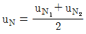
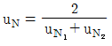
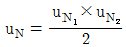
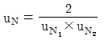
(정답률: 100%)
7. 고속철도에서 열차속도가 250km/h를 초과할 때, 전차선의 구배(‰)로 맞는 것은?
- 3
- 2
- 1
- 0
(정답률: 93%)
8. 직류 전철화 구간에서 레일과 대지간의 누설전류를 경감하기 위하여 설치하는 것은?
- 변전소(SS)
- 타이 포스트(TP)
- 구분소(SP)
- 정류 포스트(RP)
(정답률: 59%)
9. 교류전철변전소 주변압기(스코트결선)의 1차 전류가 3상평행전류이면 3상 전류의 벡터의 합은?
- 0
- √3/3
- √2/3
- √3
(정답률: 알수없음)
10. 교류 강체 전차선로 R-Bar방식에서 전기차 운전속도가 120km/h보다 작거나 같을 때 브래킷의 최대 허용간격 (m)은?
- 5
- 10
- 15
- 20
(정답률: 알수없음)
11. 커티너리 가선방식에서 교‧직류를 구분하는 절연구분장치를 설치하려고 한다. 이때 섹션 길이 산출에 필요하지 않은 것은?
- 아크 시간
- 전압계전기 동작시간
- 차단기의 차단 시간
- 전기차의 길이
(정답률: 알수없음)
12. 직류 급전방식에서 변전소 용량이 6000kW, 부하출력이 4000kW일 때, 변전소 내부 전압강하의 개략값(V)은? (단, 표준정격전압 1500V, 전압변동율 8%)
- 40
- 80
- 120
- 180
(정답률: 65%)
13. 건넘선 장치의 교차철물 설치 시 15번 분기 이상일 때 교차금구의 표준길이(mm)는?
- 900
- 1500
- 1800
- 2200
(정답률: 37%)
14. 온도변화에 따른 전차선의 신축을 조정하기 위하여 전차선을 일정한 길이로 인류하여 설치한 기계적인 장치는?
- 익스펜션 조인트
- 에어 조인트
- 이행구간
- 절연구간
(정답률: 64%)
15. 드로퍼의 길이를 구하는 공식으로 옳게 표현한 것은?
- 드로퍼 길이=가고-전차선 사전 이도에 의한 이도+조가선 이도
- 드로퍼 길이=가고+전차선 사전 이도에 의한 이도-조가선 이도
- 드로퍼 길이=가고-도로퍼 단위 중량+전차선 이도
- 드로퍼 길이=가고+도로퍼 단위 중량-전차선 이도
(정답률: 82%)
16. 단권변압기 방식에서 애자의 부측 빔 등을 연접하여 귀선 레일에 접속하는 가공전선으로 대지에 대하여 절연한 전선은?
- 보호선
- 가공지선
- 전차선
- 조가선
(정답률: 알수없음)
17. 변전소 앞 또는 급전구분소 앞에는 반드시 이상전원을 구분하기 위해 무엇을 설치하는가?
- 건넘선장치
- 진동방지장치
- 절연구분장치
- 인류장치
(정답률: 알수없음)
18. 교류 급전방식에서 스코트결선 변압기의 1차 전압을 66kV, 2차 전압을 25kV라 하고 M상의 2차 전류를 I2(A)라고 할 때, 1차 전류 I1(A)을 나타내는 식은?
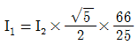
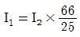
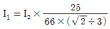
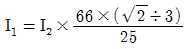
(정답률: 60%)
19. 전차선은 110mm2이고, 잔존 단면적이 67.6mm2이며, 안전율이 2.2인 전차선의 허용장력은 약 몇 kgf인가? (단, 전차선의 항장력:2400kgf이다.)
- 670
- 1075
- 1625
- 3240
(정답률: 100%)
20. 열차운전 중의 속도, 시간, 주행거리, 전류, 전력량 등의 상호관계를 도표로 표시하는 것은?
- 평균속도
- 열차속도
- 열차거리
- 운전선도
(정답률: 70%)
2과목: 전기철도 구조물공학
21. 그림과 같은 트러스 빔에서 A에 해당되는 것은?
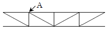
- 지점
- 절점
- 입속
- 경사재
(정답률: 알수없음)
22. 그림과 같은 원형단면의 X축에 대한 단면 2차모멘트 (4㎝4)는?
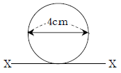
- 16π
- 20π
- 40π
- 50π
(정답률: 64%)
23. “세 힘이 서로 평행되고 있을 때 이들 세 개의 힘은 동일 평면상에 있고 또 일점에서 만난다. 이때, 각각의 힘은 다른 두 힘의 사이각의 정현(sine)에 정비례한다.”라고하는 이론은?
- 오일러의 정리
- 카스틸리아노의 정리
- 바리니온의 정리
- 라미의 정리
(정답률: 알수없음)
24. 지름이 d인 원형단면 부재가 50kN의 인장하중을 받고 있다. 부재의 허용인장응력이 120MPa일 때, 이 부재의 최소 반지름은 약 몇 mm인가?(오류 신고가 접수된 문제입니다. 반드시 정답과 해설을 확인하시기 바랍니다.)
- 12
- 23
- 46
- 73
(정답률: 알수없음)
25. 전파속도 250m/㎲, 뢰의 파두장이 1.5㎲s일 때 피뢰기의 직선적 유효보호 범위(m)는?
- 170.5
- 187.5
- 197.5
- 207.5
(정답률: 62%)
26. 전차선로 구조물의 세장비가 보기와 같을 때, 좌굴의 위험이 가장 큰 구조물은?
- 50
- 100
- 150
- 200
(정답률: 70%)
27. 가공전차선로에서 전선의 안전율(Fs)은?
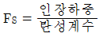
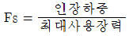
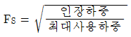
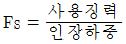
(정답률: 알수없음)
28. 정지하고 있는 구조물을 받치는 고정지점의 반력수는?
- 1개
- 2개
- 3개
- 4개
(정답률: 77%)
29. 콘크리트 기초용 앵커볼트의 소요수량을 구하는 공식으로 옳은 것은? (단, M:지면 경계에서 전주의 굽힘 모멘트(kgf⋅m), ft:볼트의 허용인장 응력도(kgf/cm2), d:볼트의 유효지름(cm), L:상대할 볼트의 간격(cm), n:인장측 소요 볼트 수량)
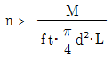
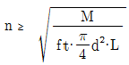
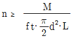
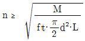
(정답률: 알수없음)
30. 조합철주에서 복경사재를 사용하는 경우의 수평면에 대한 경사각도(°)는?
- 30
- 35
- 45
- 50
(정답률: 82%)
31. 전철주 기초 중 특수기초에 해당하지 않는 것은?
- 앵커기초
- 우물통기초
- 쇄석기초
- 푸싱기초
(정답률: 64%)
32. 지선은 단지선이고 지선과 전주의 각도는 45°일 때, 급전선에 작용하는 최대 수평장력은 약 몇 kN인가? (단, 지선 근가의 허용인발저항력은 33kN, 안전율은 2이다.)
- 11.7
- 16.5
- 23.3
- 33.0
(정답률: 50%)
33. 길이가 12m인 구조물에 온도가 15℃에서 50℃로 상승했을 때, 온도에 의한 구조물의 신축량(mm)은? (단, 강재의 열팽창계수는 10×10-5이다.)
- 0.36
- 4.2
- 6.3
- 7.4
(정답률: 80%)
34. 다음 그림과 같은 라멘 구조물의 부정정 차수는?
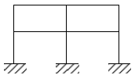
- 8
- 12
- 16
- 20
(정답률: 92%)
35. 지표면에서 높이가 9m인 단독지지주에 15kgf/m의 수평분포하중이 작용하는 경우 지면으로부터 높이가 3m 지점에서의 모멘트(kgf⋅m)는?
- 250
- 270
- 325
- 350
(정답률: 알수없음)
36. 단면1차 모멘트와 같은 차원(dimension)을 가지는 것은?
- 단면 상승 모멘트
- 단면계수
- 단면 2차 모멘트
- 회전 반지름
(정답률: 75%)
37. 조합 철기둥에 가하는 수평력이 Q(kgf), 사재의 수평면에 대한 경사각도가θ, 사재의 유효단면적이 A(cm2), 사재의 중복수가 m, 사재의 허용인장응력도가 f일 때 경사재의 강도는?
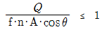
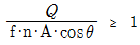
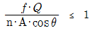
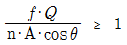
(정답률: 73%)
38. 단독 지지주에서 지지점이 6.75m인 전차선에 136.4kgf의 수평집중하중이 작용하는 경우, 지면과의 경계점에서 전단력(kgf)은?
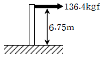
- 20.2
- 80.8
- 136.4
- 920.7
(정답률: 82%)
39. 단면의 폭이 b, 높이가 h인 직사각형 단면에서 도심축에 대한 회전반경은?
- h/2√3
- h/√3
- h/√6
- h/2√6
(정답률: 알수없음)
40. 어떤 재료의 탄성계수가 E, 프와송비가 v일 때, 이 재료의 전단 탄성계수 G는?
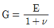
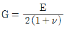
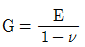
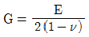
(정답률: 67%)
3과목: 전기자기학
41. 자성체의 자화의 세기 J=8kA/m, 자화율 Xm=0.02일 때, 자속밀도는 약 몇 T인가?
- 7000
- 7500
- 8000
- 8500
(정답률: 64%)
42. 진공 중에서 +q(C)와 -q(C)의 점전하가 미소거리 a(m)만큼 떨어져 있을 때, 이 쌍극자가 P점에 만드는 전계(V/m)와 전위(V)의 크기는?
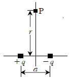
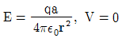
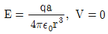
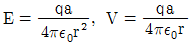
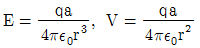
(정답률: 알수없음)
43. 반지름이 a(m)이고, 단위길이에 대한 권수가 n인 무한장 솔레노이드의 단위 길이당 자기인덕턴스는 몇 H/m인가?
- μπa2n2
- μπan
- an/2μπ
- 4μπa2n2
(정답률: 75%)
44. 진공중의 자계 10AT/m인 점에 5×10-3Wb의 자극을 놓으면 그 자극에 작용하는 힘(N)은?
- 5×10-2
- 5×10-3
- 2.5×10-2
- 2.5×10-3
(정답률: 알수없음)
45. 철심부의 평균길이가 ℓ2, 공극의 길이가 ℓ1, 단면적이 S인 자기회로이다. 자속밀도를 B(Wb/m2)로 하기 위한 기자력(AT)은?
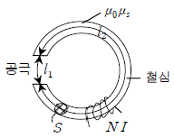
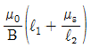
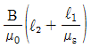
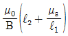
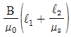
(정답률: 55%)
46. 비투자율 μs는 역자성체에서 다음 어느 값을 갖는가?
- μs=0
- μs＜1
- μs＞1
- μs=1
(정답률: 80%)
47. 쌍극자 모멘트가 M(C⋅m)인 전기쌍극자에 의한 임의의 점 P에서의 전계의 크기는 전기쌍극자의 중심에서 축방향과 점 P를 잇는 선분 사이의 각이 얼마일 때 최대가 되는가?
- 0
- π/2
- π/3
- π/4
(정답률: 82%)
48. 반지름 2mm, 간격 1m의 평행왕복 도선이 있다. 도체간에 전압 6kV를 가했을 때, 단위 길이당 작용하는 힘은 몇 N/m인가?
- 8.06×10-5
- 8.06×10-6
- 6.87×10-5
- 6.87×10-6
(정답률: 알수없음)
49. 반지름 a(m)인 원형코일에 전류 I(A)가 흘렀을 때, 코일 중심에서의 자계의 세기(AT/m)는?
- I/4πa
- I/2πa
- I/4a
- I/2a
(정답률: 50%)
50. 그림과 같은 평행판 콘덴서에 극판의 면적이 S(m2), 진전하밀도를 σ(C/m2), 유전율이 각각 ε1=4, ε2=2인 유전체를 채우고 a, b 양단에 V(V)의 전압을 인가할 때, ε1, ε2인 유전체 내부의 전계의 세기 E1, E2와의 관계식은?
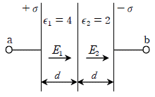
- E1=2E2
- E1=4E2
- 2E1=E2
- E1=E2
(정답률: 77%)
51. 선전하밀도 ρ(C/m)를 갖는 코일이 반원형의 형태를 취할 때, 반원의 중심에서 전계의 세기를 구하면 몇 V/m인가? (단, 반지름은 r(m)이다.)
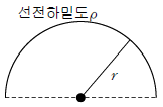
- ρ/8πε0r2
- ρ/4πε0r
- ρ/4πε0r2
- ρ/2πε0r
(정답률: 36%)
52. 다음의 관계식 중 성립할 수 없는 것은? (단, μ는 투자율, μ0는 진공의 투자율, x는 자화율, J는 자화의 세기이다.)
- μ=μ0+x
- J=xB
- μs=1+x/μ0
- B=μH
(정답률: 67%)
53. 베이클라이트 중의 전속밀도가 D(C/m2)일 때의 분극의 세기는 몇 C/m2인가? (단, 베이클라이트의 비유전율은 εr이다.)
- D(εr-1)
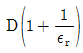
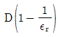
- D(εr+1)
(정답률: 알수없음)
54. 전계와 자계와의 관계에서 고유임피던스는?
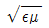
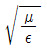
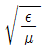
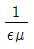
(정답률: 64%)
55. 유전율이 ε1, ε2인 유전체 경계면에 수직으로 전계가 작용할 때, 단위면적당에 작용하는 수직력은?
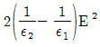
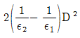
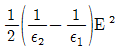
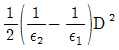
(정답률: 알수없음)
56. 자계와 전류계의 대응으로 틀린 것은?
- 자속 ↔ 전류
- 기자력 ↔ 기전력
- 투자율 ↔ 유전율
- 자계의 세기 ↔ 전계의 세기
(정답률: 67%)
57. 자성체 3×4×20cm3가 자속밀도 B=130mT로 자화되었을 때, 자기모멘트가 48A⋅m2이었다면, 자화의 세기(M)는 몇 A/m인가?
- 104
- 105
- 2×104
- 2×105
(정답률: 37%)
58. 원점에 +1C, 점 (2, 0)에 -2C의 점전하가 있을 때, 전계의 세기가 0인 점은?
- (-3-2√3, 0)
- (-3+2√3, 0)
- (-2-2√2, 0)
- (-2+2√2, 0)
(정답률: 50%)
59. 도전율 σ, 투자율 μ인 도체에 교류 전류가 흐를 때, 표피효과의 영향에 대한 설명으로 옳은 것은?
- σ가 클수록 작아진다.
- μ가 클수록 작아진다.
- μs가 클수록 작아진다.
- 주파수가 높을수록 커진다.
(정답률: 알수없음)
60. 손실 유전체에서 전자파에 관한 전파정수 ?로서 옳은 것은?
(정답률: 43%)
4과목: 전력공학
61. 송전선로에서 1선 지락 시에 건전상의 전압 상승이 가장 적은 접지방식은?
- 비접지방식
- 직접접지방식
- 저항접지방식
- 소호리액터접지방식
(정답률: 93%)
62. 보호계전기의 보호방식 중 표시선 계전방식이 아닌 것은?
- 방향 비교 방식
- 위상 비교 방식
- 전압 반향 방식
- 전류 순환 방식
(정답률: 65%)
63. 단상 변압기 3대를 Δ결선으로 운전하던 중 1대의 고장으로 V결선 한 경우 V결선과 Δ결선의 출력비는 약 몇 %인가?
- 52.2
- 57.7
- 66.7
- 86.6
(정답률: 70%)
64. 3상 3선식의 전선 소요량에 대한 3상 4선식의 전선 소요량의 비는 얼마인가? (단, 배전거리, 배전전력 및 전력 손실은 같고, 4선식의 중성선의 굵기는 외선의 굵기와 같으며, 외선과 중성선간의 전압은 3선식의 선간전압과 같다.)(오류 신고가 접수된 문제입니다. 반드시 정답과 해설을 확인하시기 바랍니다.)
- 4/9
- 2/3
- 3/4
- 1/3
(정답률: 알수없음)
65. 변압기의 결선 중에서 1차에 제3고조파가 있을 때, 2차에 제3고조파 전압이 외부로 나타나는 결선은?
- Y - Y
- Y - Δ
- Δ - Y
- Δ - Δ
(정답률: 알수없음)
66. 동일 모선에 2개 이상의 급전선(Feeder)을 가진 비접지 배전계통에서 지락사고에 대한 보호계전기는?
- OCR
- OVR
- SGR
- DFR
(정답률: 70%)
67. 그림과 같이 부하가 균일한 밀도로 도중에서 분기되어 선로전류가 송전단에 이를수록 직선적으로 증가할 경우 선로의 전압강하는 이 송전단 전류와 같은 전류의 부하가 선로의 말단에만 집중되어 있을 경우의 전압강하보다 어떻게 되는가? (단, 부하역률은 모두 같다고 한다.)
- 1/3
- 1/2
- 1
- 2
(정답률: 64%)
68. 통신선과 평행인 주파수 60Hz 의 3상 1회선 송전선이 있다. 1선 지락 때문에 영상전류가 100A 흐르고 있다면, 통신선에 유도되는 전자유도전압은 약 몇 V인가? (단, 영상전류는 전 전선에 걸쳐서 같으며, 송전선과 통신선과의 상호인덕턴스는 0.06mH/km, 그 평행 길이는 40km이다.)
- 156.6
- 162.8
- 230.2
- 271.4
(정답률: 55%)
69. 한류리액터의 BC사용 목적은?
- 누설전류의 제한
- 단락전류의 제한
- 접지전류의 제한
- 이상전압 발생의 방지
(정답률: 73%)
70. 컴퓨터에 의한 전력조류 계산에서 슬랙(slack)모선의 지정값은? (단, 슬랙모선을 기준모선으로 한다.)
- 유효전력과 무효전력
- 모선 전압의 크기와 유효전력
- 모선 전압의 크기와 무효전력
- 모선 전압의 크기와 모선 전압의 위상각
(정답률: 69%)
71. 중성점 직접 접지방식에 대한 설명으로 틀린 것은?
- 계통의 과도 안정도가 나쁘다.
- 변압기의 단절연(段絶緣)이 가능하다.
- 1선 지락 시 건전상의 전압은 거의 상승하지 않는다.
- 1선 지락전류가 적어 차단기의 차단능력이 감소된다.
(정답률: 65%)
72. 송전거리, 전력, 손실률 및 역률이 일정하다면, 전선의 굵기는?
- 전류에 비례한다.
- 전류에 반비례한다.
- 전압의 제곱에 비례한다.
- 전압의 제곱에 반비례한다.
(정답률: 50%)
73. 댐의 부속설비가 아닌 것은?
- 수로
- 수조
- 취수구
- 흡출관
(정답률: 알수없음)
74. 수전단의 전력원 방식이 =250000 으로 표현되는 전력계통에서 가능한 최대로 공급할 수 있는 부하전력(Pr)과 이때 전압을 일정하게 유지하는데 필요한 무혀전력(Qr)은 각각 얼마인가?
- Pr=500, Qr=-400
- Pr=500, Qr=500
- Pr=300, Qr=100
- Pr=200, Qr=-300
(정답률: 92%)
75. 차단기의 차단능력이 가장 가벼운 것은?
- 중성점 직접접지계통의 지락전류 차단
- 중성점 저항접지계통의 지락전류 차단
- 송전선로의 단락사고시의 단락사고 차단
- 중성점을 소호리액터로 접지한 장거리 송전선로의 지락전류 차단
(정답률: 알수없음)
76. 배전선로의 손실을 경감하기 위한 대책으로 적절하지 않은 것은?
- 누전차단기 설치
- 배전전압의 승압
- 전력용 콘덴서 설치
- 전류밀도의 감소와 평형
(정답률: 64%)
77. 중거리 송전선로의 특성은 무슨 회로로 다루어야 하는가?
- RL 집중정수회로
- RLC 집중정수회로
- 분포정수회로
- 특성임피던스회로
(정답률: 알수없음)
78. 전력선에 영상전류가 흐를 때, 통신선로에 발생되는 유도장해는?
- 고주파유도장해
- 전력유도장해
- 전자유도장해
- 정전유도장해
(정답률: 67%)
79. 발전기의 단락비가 작은 경우의 현상으로 옳은 것은?
- 단락전류가 커진다.
- 안정도가 높아진다.
- 전압변동률이 커진다.
- 선로를 충전할 수 있는 용량이 증가한다.
(정답률: 46%)
80. 전력용 콘덴서의 사용전압을 2배로 증가시키고자 한다. 이 때 정전용량을 변화시켜 동일 용량(kVar)으로 유지 하려면 승압전의 정전용량보다 어떻게 변화하면 되는가?
- 4배로 증가
- 2배로 증가
- 1/2로 감소
- 1/4로 감소
(정답률: 알수없음)
이도 = (장력 × 길이²) ÷ (8 × 단위중량 × 경간)
= (800 × 50²) ÷ (8 × 1.5 × 50)
= 586.67 ≈ 586 (소수점 이하 버림)
따라서, 가공 전차선로의 급전선의 이도는 약 586mm이다.